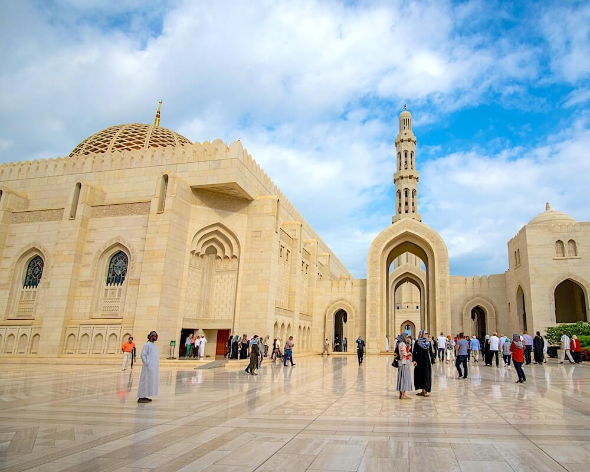
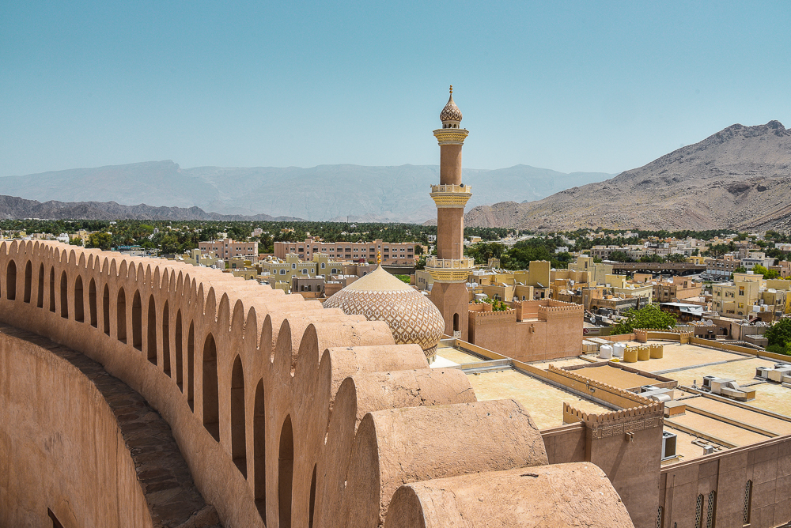
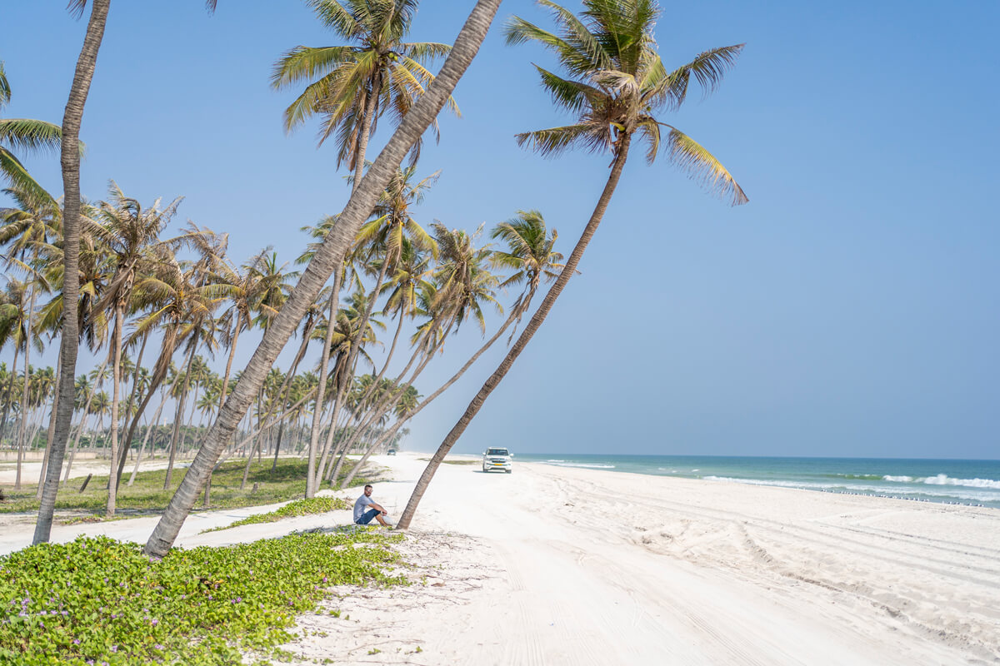
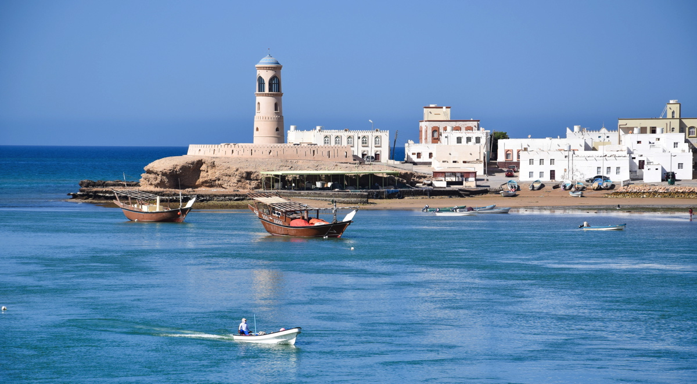
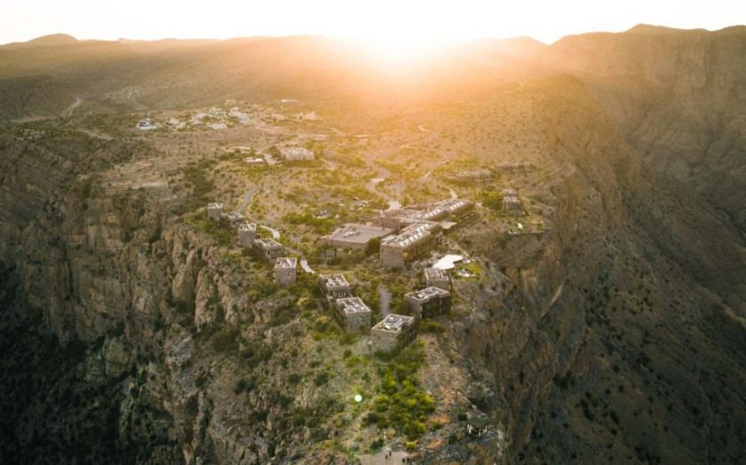
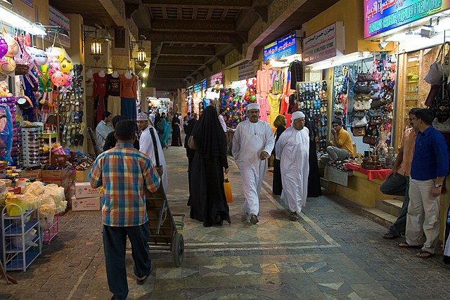

الأماكن السياحية
اكتشف معالم ومحافظات ووجهات عُمان من خلال صفحات BINGO والمعلومات السياحية المتاحة.
معلومات BINGOتعرّف على الوجهات والخدمات السياحية في عُمان، ثم انتقل إلى الموقع الرسمي أو مزود الخدمة عندما تحتاج إلى مزيد من المعلومات أو الحجز.
اكتشف معالم ومحافظات ووجهات عُمان من خلال صفحات BINGO والمعلومات السياحية المتاحة.
معلومات BINGOتعرّف على خيارات الإقامة ثم انتقل إلى منصات الحجز الخارجية عند الحاجة.
استكشف الفنادققارن الرحلات أو اطلع على خيارات الطيران عبر شركات ومنصات السفر الخارجية.
استكشف الرحلاتتعرّف على خدمات النقل وتأجير السيارات من مزودي الخدمة الخارجيين.
استكشف مزودي الخدمةهذه الروابط تنقلك إلى مواقع الجهات أو المنصات الخارجية. BINGO لا ينفذ الحجز أو الدفع من داخل هذه الصفحة.
الموقع الرسمي للطيران العُماني للرحلات والمعلومات والخدمات.
زيارة الموقع الرسمي ↗خدمات النقل العام والعبّارات والوجهات داخل سلطنة عُمان.
زيارة الموقع الرسمي ↗البوابة السياحية الرسمية للتعرف على الوجهات والأنشطة ومشغلي الرحلات.
استكشف عُمان ↗تعرّف على أفكار وتجارب في مختلف المناطق، ثم انتقل إلى مزودي التجارب أو البوابة السياحية الرسمية لمزيد من التفاصيل.





